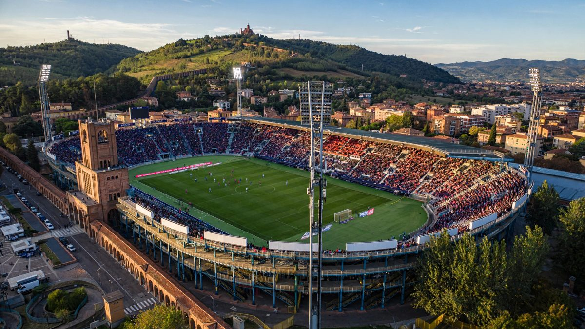

इन्टरले पछि परेर पनि बोलोनियालाई ३-१ ले हरायो, शीर्ष स्थान कायम
मार्कस थुराम, कार्लोस अगस्टो र आन्ज-योआन बोनीको गोलले सुरुवाती गोललाई उल्टाउँदै इन्टरले बोलोनियामा ३-१ को जित निकाल्यो र १९ अङ्कसहित सिरिए ए को शीर्ष स्थानमा रह्यो।

मुख्य बुँदाहरू
- शनिबार स्टाडियो रेनाटो डल्लारामा इन्टर एक गोलले पछि परेर पनि बोलोनियालाई ३-१ ले हरायो, टोमासो पोबेगाले १०औं मिनेटमा आयोजकलाई अग्रता दिलाएपछि तीन गोल गर्यो। मार्कस थुरामले ४४औं मिनेटमा बराबरी गरे,…
- इन्टर कप्तान लाउटारो मार्टिनेज बिना आएको थियो, उनी तिघ्राको चोटका कारण एक महिना बाहिर छन्, र साताको बीचमा च्याम्पियन्स लिगमा क्लब ब्रुजसँग घरमा ४-३ ले हारेको चोट अझै ताजा थियो। बेन्जामिन पाभार्ड,…
- सुरुआत इन्टरका लागि झन् खराब भयो। पोबेगाले १८ सेकेन्डभित्रै गोलमुख अगाडि बल फ्याँके, रोबर्टो पिक्कोली पूरै तन्किए पनि पुग्न सकेनन्। बोलोनियाको गोलमा फर्किएका लुकास स्कोरुप्स्कीले निकोलो बारेलाको…
शनिबार स्टाडियो रेनाटो डल्लारामा इन्टर एक गोलले पछि परेर पनि बोलोनियालाई ३-१ ले हरायो, टोमासो पोबेगाले १०औं मिनेटमा आयोजकलाई अग्रता दिलाएपछि तीन गोल गर्यो। मार्कस थुरामले ४४औं मिनेटमा बराबरी गरे, वैकल्पिक खेलाडी कार्लोस अगस्टोले ६९औंमा इन्टरलाई अगाडि राखे, र आन्ज-योआन बोनीले ८३औंमा जित निश्चित गरे। इन्टर सात खेलबाट १९ अंकसहित सिरी एको शीर्ष स्थानमा रह्यो।
इन्टर कप्तान लाउटारो मार्टिनेज बिना आएको थियो, उनी तिघ्राको चोटका कारण एक महिना बाहिर छन्, र साताको बीचमा च्याम्पियन्स लिगमा क्लब ब्रुजसँग घरमा ४-३ ले हारेको चोट अझै ताजा थियो। बेन्जामिन पाभार्ड, कर्टिस जोन्स र जोन स्टोन्स पनि बाहिर थिए। बोलोनियाका आफ्नै समस्या थिए, रिकार्डो ओर्सोलिनी र एमिल होल्म धेरै साताका लागि बाहिर थिए, तर नयाँ प्रशिक्षक राफेले पालाडिनोले टोरिनोसँग बराबरी र लेचेमा २-१ को जितसहित टोलीलाई स्थिर बनाएका थिए।
सुरुआत इन्टरका लागि झन् खराब भयो। पोबेगाले १८ सेकेन्डभित्रै गोलमुख अगाडि बल फ्याँके, रोबर्टो पिक्कोली पूरै तन्किए पनि पुग्न सकेनन्। बोलोनियाको गोलमा फर्किएका लुकास स्कोरुप्स्कीले निकोलो बारेलाको हाफ भली औंलाको टुप्पोले बाहिर धकेले। त्यसपछि लुइस हेनरिकेले जुआन मिरान्डासँग बल गुमाए, पोबेगा बक्सभित्र छिरे र गोलकिपर जोसेप मार्टिनेजलाई नजिकको पोस्टमा छक्काए।
इन्टरले स्थिर हुनुअघि थप दबाब झेल्नुपर्यो। मार्टिनेजले उडेर फेडेरिको बर्नार्डेस्चीको प्रहार बारमुनिबाट हत्केलाले निकाले, र निकोलो काम्बियाघीले लामो पास नियन्त्रण गरेर साइड नेटिङमा हाने। पिक्कोली लङ्गडाउँदै बाहिरिए र उनको ठाउँमा जे एनेम आए। पोबेगाले ३८औं मिनेटमा झन्डै २-० बनाइसकेका थिए, कर्नर रोकिएर उनको बाटोमा परेको बल साँघुरो कोणबाट क्रसबारमा ठोक्काए। त्यसको सट्टा इन्टरले हाफटाइमभन्दा एक मिनेटअघि बराबरी गर्यो। निकोलो बारेलाले क्रस गरे र थुराम उफ्रिएर हेड गरे, बल टाढाको माथिल्लो कुनामा पुग्यो। त्यसपछि स्कोरुप्स्कीले पियो एस्पोसिटोको नजिकबाटको हेडर निकालेर विश्राममा स्कोर बराबर राखे।
वैकल्पिक खेलाडीहरूले निर्णय गरे
इन्टरले दोस्रो हाफ नियन्त्रण गर्यो, खेलभर ६५ प्रतिशत बल कब्जा र बोलोनियाको ११ को तुलनामा १७ प्रहार। दबाब बेन्चबाट फलदायी भयो। एन्डी डिउफले पियोटर जिलिन्स्कीलाई दायाँतिर पठाए, र उनले बल घुमाएर कार्लोस अगस्टोलाई ६९औं मिनेटमा टाढाको पोस्टमा ट्याप इन गराए, त्यो उनको खेलको पहिलो छुवाइ जस्तै थियो। बोनीले स्कोरुप्स्कीलाई बाहिर ताने र उनको प्रहार पेटार सुचिचतिर धकेलियो, सुचिचले खुला गोलको पोस्टमा भली हाने, र त्यसपछि बोनीको आफ्नै गोल अफसाइड ठहरियो। तेस्रो गोल ८३औं मिनेटमा आउँदा चार वैकल्पिक खेलाडी मिलेको टोलीगत चाल थियो: हेनरिख म्खितार्यानले हाकान चाल्हानोग्लुको क्रस फिल्ड पास नियन्त्रण गरेर अगस्टोलाई बायाँतिर पठाए, र उनको तल्लो क्रस बोनीले सात यार्डबाट ट्याप इन गरे।
यो नतिजा प्रशिक्षक राफेले पालाडिनोको नेतृत्वमा बोलोनियाको पहिलो हार हो, टोरिनोसँग बराबरी र लेचेमा २-१ को जितपछि। बोलोनिया पाँच अंकसहित १४औं स्थानमा रह्यो।
मुख्य प्रशिक्षक क्रिस्टियन चिभुले आवाज गुमाएपछि बोलेका इन्टरका सहायक प्रशिक्षक अलेक्सान्डर कोलारोभले टोली यस सिजन बढी आक्रामक हुन खोजिरहेको र प्रारम्भिक धक्कापछि खेलमा हाबी भएको बताए।
अब के हुन्छ
इन्टरले बुधबार च्याम्पियन्स लिगमा शाख्तार डोनेत्स्कलाई आयोजना गर्छ। बोलोनिया अर्को शनिबार सिरी एमा क्याग्लियारी जान्छ।
स्रोतहरू
Football Italia र Oddsivio को खेल रिपोर्टले स्कोर, गोलकर्ताहरू र अंकतालिका दिएका थिए।